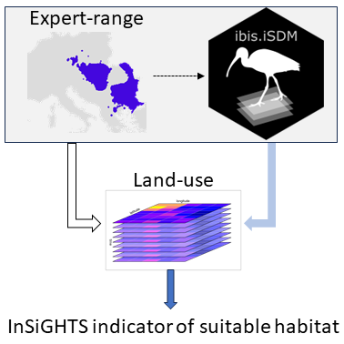
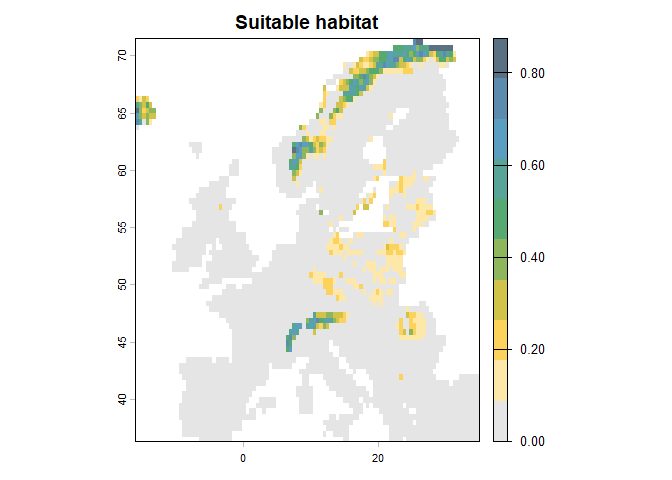
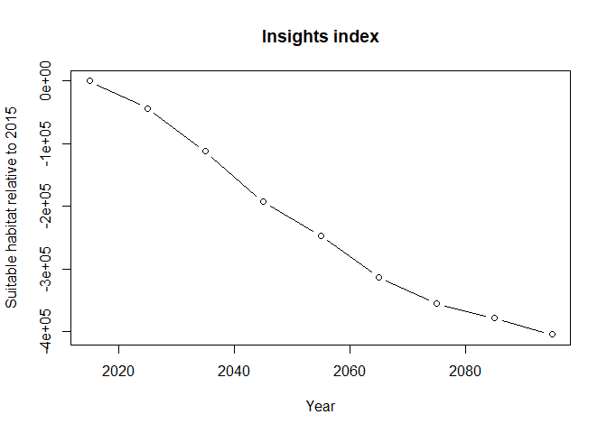

The ibis.insights package implements the InSiGHTS (Index of Habitat Availability) framework for quantifying how climate change and land-use change affect the available habitat of a species over time. The index captures the extent of suitable habitat within the current or projected range of a species, with ranges sourced from existing maps (e.g. IUCN) or from species distribution models (SDMs).

In its basic configuration, the InSiGHTS framework combines climatic suitability from an SDM with an area-of-habitat (AOH) refinement to derive suitable habitat for each time step. The InSiGHTS Index of Habitat Availability is defined for a given species and time step as:
, where indicates a reference or starting year.
More information on the InSiGHTS framework can be found in Pearson et al. 2004, Rondini and Visconti 2015, Visconti et al. 2016 or Baisero et al. (2021).
The package is part of the IIASA-BEC suite of biodiversity indicators and integrates tightly with the ibis.iSDM species distribution modelling package, though any SpatRaster or stars range object can be used as input.
Installation
You can install the development version of ibis.insights from GitHub with:
# install.packages("devtools")
devtools::install_github("iiasa/ibis.insights")The package depends on ibis.iSDM, which is also only available from GitHub:
devtools::install_github("iiasa/ibis.iSDM")Basic usage and examples
Which method should I use?
Use insights_fraction() when habitat or land-use layers are fractions or suitability weights in [0, 1]. Multiple land-use layers are summed, so pass only the classes that are relevant for the species and use clamp = TRUE if the combined suitability should be capped at one.
Use insights_area() when land-use layers are already expressed as area per cell, for example km2. The output is then already in area units, so summarize it with insights_summary(..., toArea = FALSE) to avoid multiplying by cell area again.
Use insights_discount() before either method when a habitat class should be weighted by an age or maturity layer. The default target_age / target parameterization requires a land-use-specific age or maturity layer and an age at which that land use should reach a chosen fraction of full habitat value. The optional tau parameterization requires habitat age or time since transition into suitable land use, plus a species- or group-specific establishment timescale in the same time units. The smoothed-threshold a50 / k parameterization requires the same habitat-age or transition-age layer, the age at which establishment quality reaches 0.5, and a steepness parameter in inverse age units. Use insights_summary() after either workflow to obtain absolute totals, standard relative change, or the bounded symmetric relative difference.
# Basic packages for use
library(ibis.iSDM)
library(ibis.insights)
library(glmnet)
#> Warning: package 'glmnet' was built under R version 4.5.3
#> Warning: package 'Matrix' was built under R version 4.5.3
library(terra)The workflow below uses ibis.iSDM to train a simple SDM and then applies InSiGHTS to it. SDMs are built from climatic variables (temperature, precipitation, etc.) to produce a climatic envelope model; land-use refinement is applied post-hoc. The same workflow accepts any binary SpatRaster range estimate in place of the SDM output.
# Load test data from ibis.iSDM package
background <- terra::rast(system.file('extdata/europegrid_50km.tif', package='ibis.iSDM',mustWork = TRUE))
virtual_points <- sf::st_read(system.file('extdata/input_data.gpkg', package='ibis.iSDM',mustWork = TRUE),'points',quiet = TRUE)
# Get some future predictors
ll <- list.files(system.file('extdata/predictors_presfuture/',package = "ibis.iSDM",mustWork = TRUE),
full.names = T)
# Load the same files future ones
suppressWarnings(
pred_future <- stars::read_stars(ll) |> stars:::slice.stars('Time', seq(1, 86, by = 10))
)
sf::st_crs(pred_future) <- sf::st_crs(4326)
# Get only climatic predictors and take the first time slot
pred_climate <- pred_future |> stars:::select.stars(bio01, bio12)
predictors <- ibis.iSDM:::stars_to_raster(pred_climate, 1)[[1]]
# Add some pseudo-absence data
virtual_points <- ibis.iSDM::add_pseudoabsence(virtual_points,
field_occurrence = 'Observed',
template = background)
# Now train a small little model
fit <- distribution(background) |> # Prediction domain
add_biodiversity_poipa(virtual_points,field_occurrence = 'Observed') |> # Add presence-only point data
add_predictors(predictors,transform = 'scale') |> # Add simple predictors
engine_glmnet() |> # Use glmnet for estimation
train(verbose = FALSE) |> # Train the model
threshold(method = "perc", value = .33) # Percentile threshold
# --- #
# Now load some fractional land-use layers relevant for the species
# Here we assume the species only occurs in Grassland and Sparse vegetation
lu <- c(
terra::rast(system.file('extdata/Grassland.tif', package='ibis.insights',mustWork = TRUE)),
terra::rast(system.file('extdata/Sparsely.vegetated.areas.tif', package='ibis.insights',mustWork = TRUE))
) / 10000
# Summarize
out <- insights_fraction(range = fit,lu = lu)
plot(out, col = c("grey90", "#FDE8A9", "#FBD35C", "#D1C34A", "#8EB65C",
"#56AA71", "#59A498", "#5C9EBF", "#5C8BAE", "#597182"),
main = "Suitable habitat")
# Summarize
insights_summary(out)
#> time suitability unit
#> 1 NA 259821.3 km2Of course it is also possible to directly supply a multi-dimensional gridded file using the stars package or directly through the ibis.iSDM scenario functionalities (see example below).
# Create a future scenario
sc <- scenario(fit) |>
add_predictors(env = pred_climate, transform = 'scale', derivates = "none") |>
threshold() |>
project()
#> ! State variable of transformation not found?
#> [Scenario] 2026-06-06 23:44:23.016945 | Adding scenario predictors...
#> [Setup] 2026-06-06 23:44:23.017903 | Transforming predictors...
#> [Scenario] 2026-06-06 23:44:23.759926 | Starting suitability projections for 9 timesteps from 2015-01-01 <> 2095-01-01
# --- #
# Now apply InSiGHTS using time series of future land use
lu <- pred_future |> stars:::select.stars(primn, secdf)
# Normalize for the sake of an example. Note that fractions are needed!
lu <- ibis.iSDM::predictor_transform(lu, "norm") |> round(2)
#> [Setup] 2026-06-06 23:44:25.088229 | When transforming future variables, ensure that unit ranges are comparable (parameter state)!
out <- insights_fraction(range = sc,
lu = lu)
# Summarize
o <- insights_summary(out)
plot(o$suitability~o$band, type = "b",
main = "Insights index",
ylab = "Suitable habitat relative to 2015",
xlab = "Year")
Citations
See [CITATION.cff] file for the recommended citation of this package. For the InSiGHTS framework, please cite:
P. Visconti, M. Bakkenes, D. Baisero, T. Brooks, S.H.M. Butchart, L. Joppa, R. Alkemade, M. Di Marco, L. Santini, M. Hoffmann, C. Rondinini Projecting global biodiversity indicators under future development scenarios Conserv. Lett., 9 (2016), pp. 5-13 DOI
C. Rondinini and P. Visconti, Scenarios of large mammal loss in Europe for the 21st century Conserv. Biol., 29 (2015), pp. 1028-1036 DOI
Acknowledgement
ibis.insights is developed and maintained by the Biodiversity, Ecology and Conservation group at the International Institute for Applied Systems Analysis (IIASA), Austria.